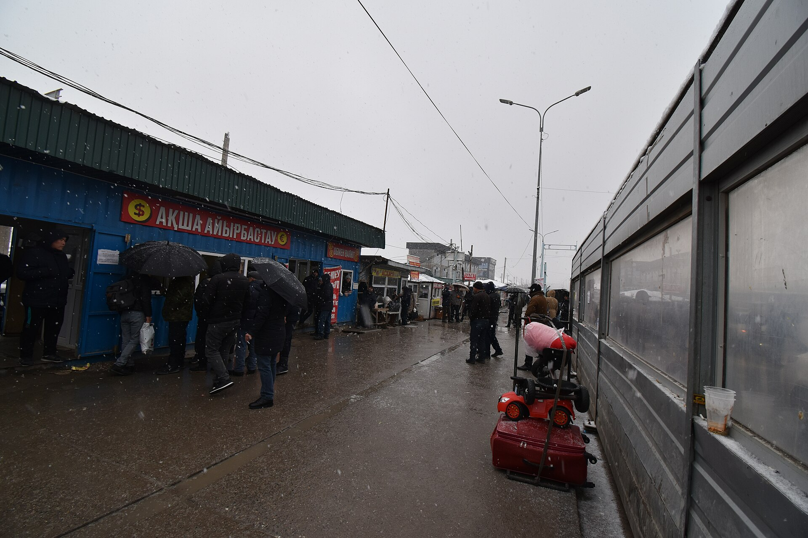

Uzbek labor migration to Kazakhstan: the second-largest destination (2000–2026)
After Russia, Kazakhstan has become the second-largest destination for Uzbek labor migrants. This article examines, based only on reliable sources, the demand that began with Kazakhstan's 2000s oil boom, the unreliable migrant-count figures, the sectors they work in, the legal asymmetry caused by the EAEU, and the diversification trend after 2022. Because migration figures are extremely uncertain, estimates are given as ranges and in cautious form.

Uzbekistan is Central Asia's most populous country (~37 million) and the region's largest labor-exporting state. Although the bulk of its labor migrants are in Russia, Kazakhstan has for many years been the second-largest destination. But the most important caveat on this subject is the numbers: Central Asian migration statistics are highly unreliable, because sources count different things — one counts migrants currently present (IOM surveys), one counts 'temporarily employed abroad' estimates (Uzbekistan's migration agency), and another counts officially registered work-permit holders (Kazakhstan's official data). For that reason the source and year is given for each figure below, and estimates are given as cautious ranges (Source: IOM DTM — Uzbek migrant workers in Kazakhstan; gazeta.uz; World Bank).
When Kazakhstan became the second destination
Researchers link the sharp rise of Uzbek migration in the 2000s to the decollectivization of agriculture: that process created a large 'surplus' rural labor force with no domestic work. It was in this period that Kazakhstan's oil boom (roughly 1999–2008, with oil rising from under $10 to over $140 a barrel) raised labor demand in construction and agriculture. According to the sources, by the mid-2000s thousands of Uzbek workers were crossing the border, mainly for seasonal work, drawn by the wage gap between Uzbekistan and Kazakhstan. Kazakhstan thus settled in as the clear second destination after Russia (Source: Taylor & Francis — New Political Economy (2023); The Diplomat (2019); European Journal of Comparative Economics (2010)).
How many Uzbeks work there — the uncertainty of the numbers
An exact number is hard to give, because sources count differently. According to Kazakhstan's official registration data, as of 1 September 2023 only about 2,000 Uzbek labor migrants were OFFICIALLY registered — which reflects the low rate of registration, not reality. The IOM Displacement Tracking Matrix (DTM), in a December 2023 – May 2024 survey, estimated that the largest group of foreign workers in Kazakhstan were Uzbeks, about 491,000 people ('nearly half a million'). Uzbekistan's migration agency, meanwhile, cited the number of Uzbeks 'temporarily employed' in Kazakhstan as having risen from ~196,800 in early 2024 to ~322,700 in early 2025. A defensible modern estimate is therefore roughly 300,000–500,000 Uzbek labor migrants (2024), with the IOM's ~491,000 and the agency's ~323,000 as the two main anchor figures. Seasonal peaks occur in the south — Almaty region, Turkestan region (the former South Kazakhstan) and around Shymkent — during the planting/harvest season for tobacco, cotton and vegetables (Source: IOM DTM (2024); Times of Central Asia; informburo.kz/gazeta.uz).

In which sectors, and under what conditions
According to the IOM DTM's 2024 survey, most Uzbek migrants work in construction (~53 percent) — the most common occupation among men; the average wage is given as 'from $500'. Next come wholesale and retail trade/bazaars (~16 percent) and agriculture (~11 percent, averaging 'from $270'), with the rest in services. On working conditions there are documented problems: working without a contract, long working days and a lack of legal protection (FIDH's 2016 report 'Migrant Workers in Kazakhstan: No status, no rights'; Eurasianet). For accuracy one fact should be set apart: although Human Rights Watch's 2010 report 'Hellish Work' documented harsh labor, the absence of contracts, passport confiscation and child labor on tobacco farms in Kazakhstan (Enbekshikazakh district, Almaty region), most of those tobacco workers were Kyrgyz; Uzbeks were concentrated more in cotton, construction and bazaars — so the two cases should not be conflated (Source: IOM DTM (2024); Human Rights Watch — 'Hellish Work' (2010); FIDH (2016)).
The legal regime: the EAEU, registration and an agreement
The most important legal point is the asymmetry of the EAEU (Eurasian Economic Union): Kazakhstan is an EAEU member, while Uzbekistan is not (it obtained only observer status in December 2020). Citizens of EAEU states — Russia, Belarus, Kyrgyzstan (which joined in 2015) and Armenia — can work in Kazakhstan without a work permit; Uzbeks do not have this advantage, which is a genuine disadvantage relative to the Kyrgyz. There is a further point: an Uzbek citizen may work in Kazakhstan for private individuals (households) without a permit, but employment by legal entities (companies) requires a permit/quota — which pushes much labor into the informal sphere. Uzbeks enter Kazakhstan visa-free; the period of stay without registration was extended from 5 days to 30 days, and under a rule effective 1 July 2026 visa-free visitors staying up to 90 days must register online with internal-affairs authorities within 30 days of crossing the border. A labor agreement between the two states on the organized employment of Uzbek citizens has reportedly been in force since 2021 (this date rests on a less firm source than the other points), and in November 2026 negotiations were held on further easing border and labor procedures (Source: egov.kz; Fragomen — New Entry and Stay Rules; Trend.az).
Remittances and the recent trend
On remittances Kazakhstan is still well behind Russia, but its share is growing: in 2023 about $588 million was sent from Kazakhstan to Uzbekistan (mainly through the Zolotaya Korona system), while from Russia about $8.58 billion was sent that year (sharply down from ~$14.7 billion in 2022). According to the World Bank, total remittances equaled about 17.8 percent of Uzbekistan's GDP in 2023 and about 14.4 percent in 2024; about 15 percent of Uzbek migrants live in Kazakhstan. COVID-19 (2020) dealt a heavy blow to migrants — when Uzbekistan closed its borders, many Uzbek workers were stranded at the Zhibek Zholy crossing on the Russia–Kazakhstan border. After 2022 the main trend has been diversification: instability in Russia pushed Uzbeks to change destination, and Kazakhstan became one of the most popular destinations in a number of 2024–2025 readings. In the first half of 2026 the number of Uzbeks entering Russia 'for employment purposes' fell by 13.2 percent, while the flow turned more toward Kazakhstan, Europe, Turkey and South Korea (Source: Times of Central Asia; World Bank; Central Bank of Uzbekistan; IOM).
Why this matters
Labor migration to Kazakhstan is part of a process that reduces the over-dependence of Uzbek migration on Russia and widens the range of destinations. A neighbor that is close in language and culture, yet legally uneven because of the EAEU, remains both an opportunity and a source of vulnerability for Uzbek migrants. All figures given in this article rely only on official and reliable sources; because migration statistics are uncertain by nature, estimates are given as ranges and official counts are shown with their exact limitations, and no unverified figure has been added.

Sources
- IOM Displacement Tracking Matrix — Uzbek International Migrant Workers in Kazakhstan (2024)
- Human Rights Watch — 'Hellish Work': Exploitation of Migrant Tobacco Workers in Kazakhstan (2010)
- Times of Central Asia — Kazakhstan Replaces Russia as Destination for Uzbek Migrants
- Times of Central Asia — Uzbek Labor Migration to Russia Falls 13.2% in First Half of 2026
- The Diplomat — Why Is Kazakhstan a Growing Destination for Central Asian Migrant Workers? (2019)
- FIDH — Migrant Workers in Kazakhstan: No status, no rights (2016)
- gazeta.uz — Number of labor migrants from Uzbekistan abroad drops by more than a third (2025)
- Fragomen — Kazakhstan: New Entry and Stay Rules Implemented